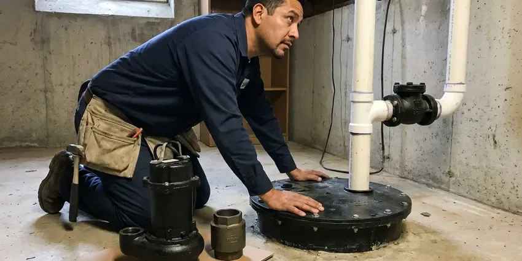

PEX Pipe Installation in Anniston, AL
For top-notch PEX pipe installation in Anniston, AL, trust the experienced plumbers at BRV Plumbing to get the job done right.
- Fast, Reliable Service
- Licensed, Insured Plumbers
- Upfront Pricing
- Local Anniston Experts

Upgrade to PEX with BRV Plumbing in Anniston, AL.
Secure modern, durable plumbing for your home with our skilled team.
Professional PEX Pipe Installation in Anniston, AL by BRV Plumbing
When it comes to upgrading or replacing your home's plumbing, BRV Plumbing provides expert PEX pipe installation throughout Anniston, AL. We ensure your new plumbing system is efficient, leak-free, and compliant with all local building codes.
Our expertise includes:
- Whole-home PEX repiping services
- PEX main water line connections and installations
- Fixture and appliance PEX hookups

Additional Plumbing Installation Services in Anniston, AL
We install water heaters, pumps, lines, and fixtures across Anniston, AL with careful, permitted work that passes inspection the first time.


Customers
Why Choose BRV Plumbing for PEX Pipe Installation in Anniston, AL?
Our plumbers are highly trained in the latest PEX installation techniques, ensuring a clean, efficient, and long-lasting plumbing system. We use only high-grade PEX materials from reputable manufacturers.
- Durability, PEX is highly resistant to corrosion, scale buildup, and chlorine, common issues that degrade older metal pipes.
- Flexibility, Its flexibility allows for fewer fittings and connections, reducing potential leak points in your plumbing system.
- Cost-Effective, PEX installation is often more affordable and quicker than traditional copper piping, saving you time and money.
Citywide Coverage
BRV Plumbing proudly serves every neighborhood and surrounding community of Anniston for all PEX pipe installation needs. Whether you're in an older part of town or a newer development, our team is ready to provide prompt and professional service.
Experienced Team
Our team of licensed plumbers has extensive experience with PEX pipe installation, having completed numerous projects across Anniston, AL. We stay up to date on best practices and local codes to ensure every installation is flawless and durable.
Safety-First Approach
Safety is paramount in every PEX pipe installation we undertake. We adhere strictly to all Alabama plumbing codes and industry safety standards, ensuring a secure and compliant system for your home and family.
Trusted Certified Anniston Plumbing Services Professionals
At BRV Plumbing, we take pride in providing certified plumbing services throughout Anniston, AL. Backed by leading industry credentials, our experienced plumbers combine technical skill with genuine customer care. Whether it is repair, installation, or maintenance, we follow strict safety and quality standards to deliver lasting results you can trust.
Call Us Now PHCC Plumbing Contractor Recognition
PHCC Plumbing Contractor Recognition Better Business Bureau (BBB) Accreditation
Better Business Bureau (BBB) Accreditation Angi Certified Pro
Angi Certified Pro ISO 9001 Quality Management Certification
ISO 9001 Quality Management CertificationReliable PEX Pipe Installation Services in Anniston, AL
Whole-Home PEX Repiping in Anniston
If your home has old, corroded, or leaking pipes made of galvanized steel or polybutylene, a whole-home PEX repipe is an excellent solution. We remove the outdated piping and install a complete PEX system, improving water pressure, water quality, and eliminating costly leaks. This comprehensive service ensures your entire plumbing infrastructure is modern, efficient, and built to last for decades in your Anniston home.

New Construction PEX Plumbing in Anniston, AL
For new homes being built in Anniston, AL, PEX plumbing offers significant advantages. Its flexibility simplifies installation, often reducing labor costs and construction time compared to rigid piping materials. PEX is also a quieter system, minimizing water hammer noise. We work with builders and homeowners to design and install efficient and reliable PEX plumbing systems from the ground up, tailored to the specific needs of your new property.
PEX Main Water Line Installation in Anniston
The main water line brings water into your home, and a failing one can cause major issues. We provide expert PEX main water line installation, replacing old, damaged lines with durable PEX. This upgrade improves water flow, reduces the risk of future leaks, and offers superior resistance to ground shifting and corrosion, which are factors to consider in Anniston's soil conditions. Our team ensures a proper trenching and connection to your municipal supply.
PEX for Remodels & Additions in Anniston, AL
Expanding your home or remodeling a kitchen or bathroom often requires new plumbing lines. PEX is an ideal choice for these projects in Anniston, AL due to its adaptability and ease of installation in existing wall cavities or new structures. We can seamlessly integrate new PEX lines with your current system, ensuring adequate water supply to new fixtures and appliances without compromising the integrity of your existing plumbing.
Uponor PEX System Installation in Anniston
BRV Plumbing frequently installs Uponor PEX systems, a leading brand known for its high-quality, durable PEX-a piping. Uponor's ProPEX expansion fittings create strong, reliable, and leak-resistant connections, ideal for the demands of a home's plumbing. We recommend Uponor for its proven performance and longevity, providing Anniston homeowners with peace of mind regarding their plumbing investment.
Emergency PEX Pipe Repair & Installation in Anniston, AL
While PEX is highly durable, unforeseen circumstances can sometimes lead to damage. If you experience a PEX pipe issue or need an emergency repair or replacement in Anniston, AL, BRV Plumbing is here to help. Our emergency services ensure that any burst or damaged PEX lines are quickly addressed and repaired or re-installed to minimize water damage and restore your plumbing functionality promptly. We carry common PEX sizes and fittings to expedite repairs.
PEX-A vs. PEX-B Installation in Anniston
We offer installation services for both PEX-A and PEX-B piping, understanding the distinct advantages of each. PEX-A, often preferred for its flexibility and ability to self-heal minor kinks, uses expansion fittings. PEX-B is more rigid but also very durable, typically using crimp or compression fittings. Our experts in Anniston can help you determine which type of PEX is best suited for your specific plumbing project, considering factors like budget and application.

Commercial PEX Pipe Solutions in Anniston, AL
Beyond residential services, BRV Plumbing also provides PEX pipe installation for commercial properties in Anniston, AL. PEX offers advantages like efficient water distribution, reduced material costs for large-scale projects, and resistance to corrosion, which is crucial for commercial longevity. Whether it's a small office building or a multi-unit complex, our team can design and install a robust PEX plumbing system that meets commercial demands and codes.
PEX Pipe Installation Near Me in Anniston, AL
When you search for "PEX pipe installation near me" in Anniston, AL, BRV Plumbing is your local, trusted solution. Our conveniently located teams are ready to respond quickly to your plumbing needs, providing efficient and high-quality PEX services right to your doorstep.
We understand the importance of having a reliable local plumber who knows the specific challenges and requirements of homes in Anniston. Our proximity allows us to offer timely service, ensuring your PEX pipe installation project is handled with speed and professionalism.
BRV Plumbing at a Glance
- Fully licensed plumbing team covering Anniston, AL
- 24/7 emergency service with same-day scheduling
- Upfront, flat-rate pricing before work begins
- 4.8-star rated by 549+ Alabama customers
Anniston Map
Anniston Information
- Population
- 21,167
- Area codes
- 256/938 /205
- Service area
- Anniston and communities within 40 miles
- Nearby
- Gadsden, Vestavia Hills, Birmingham, Hoover
PEX pipe installation is a smart investment for Anniston, AL homeowners, offering superior resistance to the corrosion and occasional freeze conditions that can plague older metal pipes in our local climate.
Expert Services
Trust our professionals for reliable BRV Plumbing solutions in Anniston, AL.
Our Specialized Plumbing Services in Anniston, AL
At BRV Plumbing, we provide a complete range of plumbing services across Anniston, AL. From leak detection to full system installations, our team ensures fast, precise, and affordable service for both residential and commercial properties. Explore our core services below:


How Our PEX Pipe Installation Process Works in Anniston, AL
At BRV Plumbing, we follow a streamlined process for PEX pipe installation to ensure efficiency, quality, and minimal disruption to your home.
Request a Quote
Call (256) 391-9413 or fill out our online form to schedule an initial consultation. We'll discuss your needs and provide a clear, upfront estimate for your PEX pipe installation.
On-Site Assessment
Our expert plumbers visit your Anniston home to conduct a thorough evaluation of your existing plumbing and determine the best PEX piping solution. We identify access points and plan the optimal pipe routing.
Installation & Testing
We meticulously install the PEX piping, ensuring all connections are secure and code-compliant. After installation, the system undergoes rigorous pressure testing to confirm it's completely leak-free and functioning perfectly.
Frequently Asked Questions About PEX Pipe Installation in Anniston
The cost of PEX pipe installation in Anniston, AL varies based on the scope of the project, such as a full repipe or a small repair. Generally, homeowners can expect to pay between $3,000 and $10,000 for a whole-home repipe, while smaller projects might range from $500 to $2,000. We provide detailed, transparent estimates before starting any work.
BRV Plumbing stands behind the quality of our PEX pipe installations with a comprehensive warranty on both labor and materials. Specific warranty details will be provided with your estimate, but you can be confident that we ensure your new PEX system is installed correctly and will perform reliably for years to come in your Anniston home.
PEX is exceptionally well-suited for Alabama's climate, particularly because of its flexibility and resistance to freezing. While traditional rigid pipes can burst when water freezes, PEX can expand and contract, significantly reducing the risk of burst pipes during colder snaps. It also performs well in high temperatures, making it a reliable choice year-round in Anniston.
For significant plumbing changes, such as a whole-home repipe or new main water line installation in Anniston, a plumbing permit is typically required. BRV Plumbing handles all necessary permit applications and ensures that your PEX pipe installation complies with all local building codes and regulations, making the process hassle-free for you.
PEX piping has an impressive lifespan, often lasting 50 years or more under normal operating conditions. Its resistance to corrosion, scaling, and extreme temperatures contributes to its longevity, making it a robust and long-term plumbing solution for homes in Anniston, AL.
While PEX installation can appear straightforward, professional installation is strongly recommended, especially for whole-home repipes or main line work. Proper tools, techniques, and adherence to local plumbing codes are crucial for a leak-free and safe system. DIY mistakes can lead to costly water damage and future repairs, so trusting BRV Plumbing for your Anniston installation ensures peace of mind.
PEX offers several advantages over copper, including lower material and installation costs, greater flexibility for easier installation, and resistance to corrosion and freezing. Unlike copper, PEX does not develop pinhole leaks over time due to water chemistry, making it a more durable choice for many Anniston homes. It also reduces water hammer noise.
We primarily use high-quality, reputable PEX brands such as Uponor (PEX-a) and Viega (PEX-b), which are known for their durability and reliability. These brands meet or exceed all industry standards and are approved for use in Alabama plumbing applications, ensuring a long-lasting and dependable plumbing system for your home.
What People Are Saying About Our Plumbing Experts?

Patricia H.
We had a slab leak that two other companies could not find. BRV Plumbing located it in under an hour, explained our options, and the price matched the quote to the dollar.
Slab Leak Repair · Anniston, AL
Sofia M.
Two new toilets installed in one visit, no mess left behind, and the tech even adjusted a faucet he noticed was dripping. Fair pricing and really friendly.
Toilet Installation · Alabaster, AL
Robert G.
The trenchless sewer replacement saved our front yard. They walked us through the camera inspection footage first so we knew exactly what we were paying for.
Sewer Line Replacement · Gadsden, AL
Daniel K.
A pipe burst at 11 pm and they actually answered. The plumber showed up within the hour, shut everything down, and had us back to normal the next morning. Could not ask for more.
Emergency Plumbing · Birmingham, AL
Emily R.
I called BRV Plumbing for plumbing repair, and the technician was fast, polite, and thorough. They explained the problem clearly and fixed it the same day. I will definitely hire them again. Highly recommended!
Plumbing Repair · Gadsden, ALLaura S.
I scheduled a water heater replacement, and the team made the process smooth and affordable. The new unit works perfectly, and they cleaned up after completing the job.
Water Heater Replacement · Hoover, AL